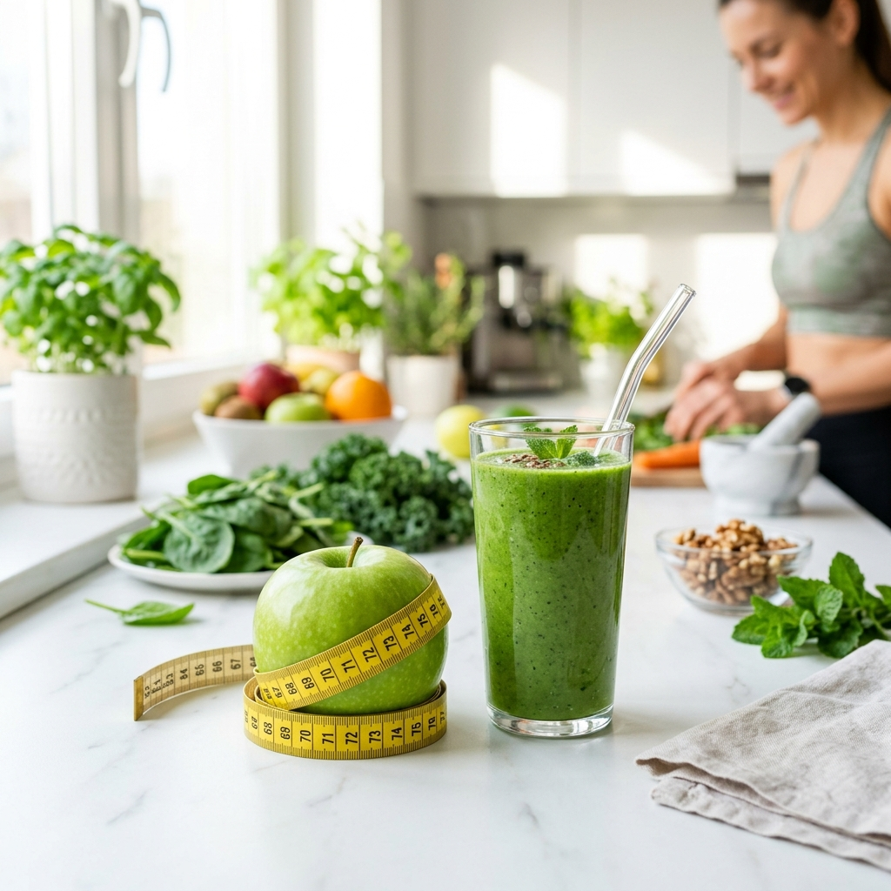

Lose Weight for Good —
Without
Starving Once.
A science-backed, fully personalised weight loss programme built around your body, your lifestyle, and the foods you already love.
Goal
Sustainable Fat Loss
No Starvation
No Crash Diets

Weight Loss That Actually Lasts
Most weight loss programmes fail because they treat every person the same. They give you a calorie target, a generic meal plan, and leave you to figure it out alone. That's not what we do.
At Healthy Mission Bharat, we begin by understanding you — your metabolic type, your daily schedule, your food preferences, your medical history, and your relationship with food. Then we build a plan that fits seamlessly into your real life.
"The goal is never just weight loss — it's building a relationship with food where you instinctively make the right choices, every day, for the rest of your life."
We use a kitchen-first approach: every ingredient in your plan comes from your local market. No protein powders, no meal replacement shakes, no expensive supplements — ever.
Common Weight Loss Myths — Busted
Everything in Your Weight Loss Programme
From your very first consultation to your final weigh-in milestone — here's exactly what you get.
Comprehensive Health Assessment
A deep-dive session covering your medical history, current diet, lifestyle patterns, stress levels, sleep, and personal weight loss goals.
Personalised Weekly Meal Plans
Fully custom meal plans updated every week — with breakfast, lunch, dinner, and snack options that match your taste and schedule.
Weekly Progress Reviews
One-on-one check-in every week to review your progress, address challenges, and fine-tune your plan based on real data.
Recipe Cards & Shopping Lists
Easy-to-follow recipes for every meal in your plan, plus weekly shopping lists so you always know what to buy.
WhatsApp Support
Direct access to your dietitian via WhatsApp for quick questions, meal swaps, recipe help, or motivation when you need it.
Progress Tracking
Track your weight, measurements, energy levels, and health markers across the programme to see your transformation unfold.
Your Weight Loss Timeline
Sustainable results take time. Here is how your body transforms over our program.
Weeks 1-2: Metabolic Reset
We transition you to a structured eating window. You'll drop initial water weight, and your cravings for sugar will significantly decrease.
Weeks 1-2: Metabolic Reset
We transition you to a structured eating window. You'll drop initial water weight, and your cravings for sugar will significantly decrease.
Month 1-2: Fat Adaptation
Your body switches from burning sugar to burning stored fat. You will notice inches dropping, clothes fitting looser, and energy levels remaining stable all day.
Month 1-2: Fat Adaptation
Your body switches from burning sugar to burning stored fat. You will notice inches dropping, clothes fitting looser, and energy levels remaining stable all day.
Month 3+: Sustainable Maintenance
You hit your goal weight. We now teach you how to maintain it while incorporating more flexibility, eating out, and navigating holidays without regaining the weight.
Month 3+: Sustainable Maintenance
You hit your goal weight. We now teach you how to maintain it while incorporating more flexibility, eating out, and navigating holidays without regaining the weight.
Frequently Asked Questions
How fast will I lose weight?
Most clients see 1–2 kg of fat loss per week in the first month. Total results depend on your starting weight, adherence, and health conditions — but clients typically lose 6–12 kg in 3 months.
Do I need to exercise to lose weight?
Exercise helps but is not mandatory. Many of our clients lose significant weight through diet alone. If you do exercise, we will time your meals around your workouts for better results.
Do you provide recipes?
Yes, we provide easy-to-cook recipes for your meals and snacks. Our recipes use basic Indian ingredients available in any local grocery store.

Your Weight Loss Journey Starts with
One Free Call.
Speak directly with our clinical dietitians. Let's discuss your goals, review your lifestyle, and map out a sustainable plan to regain control of your body.
Book Free Consultation